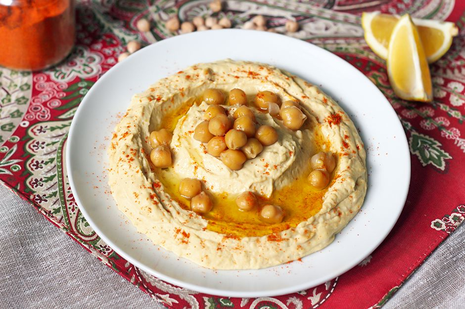

A Blue Heading
Zeytinyağı, tahin ve taze sıkılmış limon suyunun da katkılarıyla haşlanmış nohuttan hazırlanan en güzel mezelerin başında gelir humus tarifi. Tarifte yer alan diğer malzemelerle kıvam kazanan humus, kimyon ve sarımsakla çeşnilenir. Kabukları tek tek ayıklanan nohutlar, eski usul havanda dövülerek ya da blender yardımıyla karıştırılarak krema kıvamına getirilir.
Tarif: Baran BAĞCI

Humus İçin Malzemeler
Humus İçin
- 2 su bardağı nohut(250 g)
- 2 diş sarımsak
- 1,5 su bardağı tahin
Nasıl Yapılır?
- Nohutları 1 gece veya en az 4-5 saat öncesinden ıslatın. Sindirimi kolaylaştırması ve daha kolay pişmesi için suyuna 1 tatlı kaşığı karbonat ekleyin. Ertesi gün suyunu süzün ve tekrar sudan geçirin.n
- Nohutları tencereye alıp üzerine su ekleyin ve pişmeye bırakın. Normal bir çelik tencerede 45 dakika kadar pişecektir. Nohutlar iyice yumuşadıktan sonra ocaktan alın. 1-2 yemek kaşığı kadar humus üzerinde servis etmek üzere ayırın
Afiyet Olsun